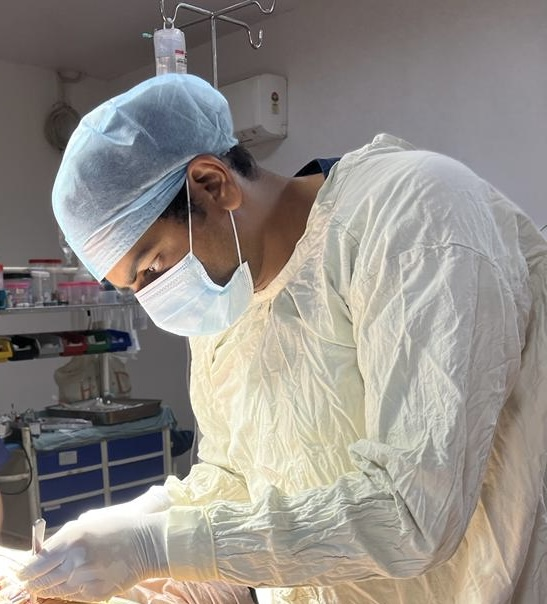

I'm Dr. Nishkarsh Gaur — an MBBS physician serving as Medical Officer In-Charge at an Urban Health & Wellness Centre under the National Health Programme, with formal surgical training across burns, plastic, and general procedures at Guru Tegh Bahadur Hospital, Delhi.

NGMy practice sits at the intersection of two disciplines that look very different on paper but answer the same question: how do we reduce avoidable suffering? In the OT, that means careful hands and disciplined post-operative care. In the field, it means programmes that reach the household before disease becomes diagnosis.
I completed my MBBS at K.D. Medical College, Mathura, and have since worked across tertiary care, super-speciality, and now primary public-health settings. My clinical foundation is in burns and reconstructive surgery; my current role is in community-level health system delivery for an urban population.
Across clinical, surgical, research, and administrative work.
As Medical Officer In-Charge under the National Health Programme (NUHM), I lead a primary-care facility serving an urban catchment — coordinating curative care, preventive outreach, training of frontline workers, and day-to-day administration.
Organising OPD and dispensary, screening referrals from FHWs, ASHAs, and school teachers, and managing emergencies beyond standard OPD hours.
Rolling out National Health & Family Welfare Programmes including NUHM, formulating local health and sanitation plans with ANMs, and conducting field investigations.
Continuing education for PHC staff and ASHAs, skill-building based on local needs, and maintaining a structured training database for the team.
Inventory and stock registers, drug and vaccine indents, transport upkeep, monthly tour reports, and integrated coordination with AYUSH services.
Leading a primary care facility under NUHM with full curative, preventive, training, and administrative responsibilities — including coordination with civil administration, community leaders, and welfare agencies.
Vital sign assessments and initial clinical evaluations in volunteer health camps; organised patient documentation and supported caregiver communication.
My surgical training is centred on the Burns and Plastic Surgery unit at Guru Tegh Bahadur Hospital, New Delhi, with additional rotations through general surgery, emergency, and OPD clinics. Procedural exposure spans grafting, debridement, and reconstructive work.
Documented during Junior Residency, Guru Tegh Bahadur Hospital (2024).
Ongoing clinical investigation initiated during JR posting at GTB Hospital, Department of Burns & Plastic Surgery.
Daily rounds, patient assessments, dressing of acute burns and wounds, and surgical assistance under faculty supervision. Contributed to perioperative care and post-op follow-up across the burns and plastic surgery unit.
Patient assessments and consultations, preventive and wellness counselling, and assistance to the Head of Surgery in ongoing clinical research. Maintained clinical logs and participated in academic seminars.
Rotated across departments with detailed patient assessments, preventive counselling, and research support. Independently managed an ongoing study comparing serum Vitamin A levels in newborns with anorectal malformation and their mothers vs. normal controls.
I keep a clinician's interest in the data behind decisions — particularly antimicrobial use, micronutrient correlations, and perioperative protocols — and pair it with continuing medical education from international institutions.
Whether it's a research collaboration, a public-health programme, a clinical opportunity, or just a thoughtful question — I'd be glad to hear from you.